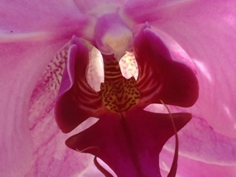
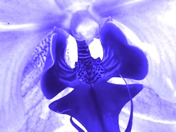
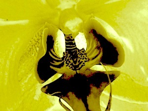

The snapping shut of a Venus flytrap leaf in 100 milliseconds certainly clashes with the view of plants as inanimate. Its rapid movement led Charles Darwin to call the plant "one of the most wonderful in the world."
 The usual connection between plants and animals in the food chain is also inverted by hundreds of other species of (generally more passive) carnivorous plants. But carnivorous plants are not the only examples of vegetation capable of rather un-plant-like things.
Screenwriters searching for the perfect B-movie plant protagonist could take inspiration from the walking palm, found in the rainforests of Central and South America. The tree slowly "walks" from shade to sunlight by growing new roots toward the light, and allowing the old roots interfering with its wanderlust to die.
Plants detect, integrate and respond to many environmental signals, including light, water, minerals, gravity, and soil structure. Plants also have a form of "memory." For example, plants that reorient their leaves during the night to anticipate the direction of sunrise continue to do so for a few days after being placed in cabinets under artificial lights.
Furthermore, new evidence suggests that plants can recognize their kin, something many animals cannot do. Plants of at least some species sprout roots less aggressively if they detect a relative growing nearby and more aggressively if their neighbor is a stranger.
These discoveries have led to the recent founding of an international scientific society devoted to the study of plant neurobiology. A handful of scientists have even gone so far as to propose that plants harbor brain-like units in the tips of their roots.
Other scientists are vehemently opposed to the use of the term neurobiology in reference to plants. Although they agree plant cells can communicate via electrical signals, they counter that there is no evidence for nerve-like structures in plants.
From gene sequence data, it is estimated that plants and animals diverged 1.6 billion years ago from their last common ancestor, a single-celled organism. Sometime after that, plants incorporated the bacterial chloroplast—a cellular component that allows plants to photosynthesize. Nearly all life on earth would perish without plants to convert the sun's energy into sugars through the process of photosynthesis.
In school, we all learned that plants can photosynthesize, but animals cannot. Many animals, such as sponges, coral, jellyfish and sea anemones, can photosynthesize by cheating—partnering with algae. Of course, nature loves giving us exceptions to our rules, and at least one photosynthesizing animal exists, the green sea slug Elysia chlorotica.
Unlike animals that partner with intact algae cells, the green sea slug extracts chloroplasts—the photosynthetic machinery—from algae it consumes and then holds the chloroplasts within its own cells. Especially surprising to researchers was the finding that the chloroplasts continued to function in the sea slugs' cells, even though animals cannot manufacture the chlorophyll needed to keep chloroplasts in good working order. It turns out that sea slugs also steal enough genetic material from the algae to make the chlorophyll itself. Theft accomplished, a sea slug can satisfy its appetite by sunbathing.
 Hundreds of varieties of purportedly blue roses have been commercialized, including Blue Heaven, Blue Moon, Rhapsody in Blue, Blue Bajou and Shocking Blue. The flowers are pretty shades, such as lilac, magenta or grayish purple, but only an optimistic rose breeder would call them blue. True blue roses are so challenging to make, and so desirable, that they have been called the Holy Grail of horticulture.
Wild roses come in white, pink and red. Over hundreds of years, mutation, selection and hybridization have created garden roses in a variety of shapes and sizes and extended the color palette. For instance, yellow roses made their appearance in 1820. Blue roses are elusive because delphinidin—the main pigment that produces the blue hue—is not naturally found in roses.
The main purpose of flower pigmentation is to allow pollinators to identify flowers against their background. The palette Mother Nature uses to paint the flowers of a particular species determines what pollinators are attracted because different species of pollinators perceive color differently. Red flowers are distinctive to hummingbirds, but not to bees, which perceive red light poorly. Some pigment patterns are invisible to us, but stand out to bees, which can detect ultraviolet light.
Genetic engineering can extend a plant's color palette more dramatically than traditional breeding techniques. Making violets red and roses blue requires new pigment genes and a pH adjustment, too. Roses have been engineered with genes that enable them to produce the pigment dephinidin. The pigment accumulated in the petals, and the roses were more blue than other roses, but not really blue. That is because the pH—acidity levels—in the flowers was not ideal.
The pH affects the color of some plant pigments. If you cook purple cabbage with vinegar, the cabbage becomes distinctively redder. Similarly, the vacuoles—plant cell compartments in which pigments accumulate—of roses are acidic, and in this environment the delphinidin pigment appears more red than blue.
Another factor that affects delphinidin's blueness is the presence of co-pigments. These are molecules that stack together with delphinidin, forming a complex that is bluer than delphinidin alone.
It is much easier to dump white roses in a vat of dye than to breed roses with the appropriate pigments, co-pigments and pH, but genetic engineering is yielding novel shades while bringing blue roses incrementally closer to reality.
Pansies come in yellow, red and blue, but result from crossbreeding. Each plant species typically exhibits limited flower color, especially in the wild.
 Three major families of pigments are responsible for flower coloration, anthocyanins, betalains, and carotenoids. Anthocyanins can be present in the same flower species as carotenoids. Betalains and carotenoids can be present in the same flower species. In contrast, anthocyanins are not present in any of the species that accumulate betalains.
Although two pigment families are mutually excluded, primary colors are not, because each pigment family contains a range of colors. Rather than being classified by color, plant pigments are grouped according to similarities in their chemical structures and the overlap in the steps through which plants synthesize them.
Anthocyanin pigments can paint flowers orange, red, purple or blue. Betalains come in yellow to orange and red to purple. Carotenoids are responsible for the yellow to orange colors in many ornamentals, including marigolds, daffodils, roses and lilies. With red or purple pigments, carotenoids give brown and bronze hues.A combination of anthocyanins with carotenoids can yield yellow, red and blue flowers within a single species, but a unique set of enzymes is required to synthesize each pigment. Also, color depends on the shape of the flower cells, the presence of compounds that interact with the pigments, and the pH in the compartments in the cell that store the pigments.
Therefore, for a new flower color to arise in the wild, all the right factors must come together, and confer an advantage, or at least not be disadvantageous, to the plant. For example, in greenhouse populations of petunias, blue pH mutants arise spontaneously and are completely healthy. In contrast, no blue petunias have been found in wild populations, which suggests that blue petunias may be less attractive to pollinators.
Much is unknown about the evolution of flower color, but yellow flowers very likely preceded red and blue ones. Carotenoids have been around a long time because they play an important role in photosynthesis. Betalains are restricted to one order of flowering plants, and may have evolved at the same time as, or after, anthocyanins.
For more than seven years, health and science writer Sherry Seethaler answered questions in her weekly Questions Answered column in the San Diego Union-Tribune. Her books Curious Folks Ask 1 and 2 bring together 350 of the best questions and answers. The questions and answers above are from Curious Folks Ask 2, Chapter 3, Vitally Vegetal. Listen to a podcast interview about the questions in Curious Folks Ask 1 on ReachMD Second Opinion Live, Curiouser and Curiouser: Origins of Medicine's Myths and Mysteries.